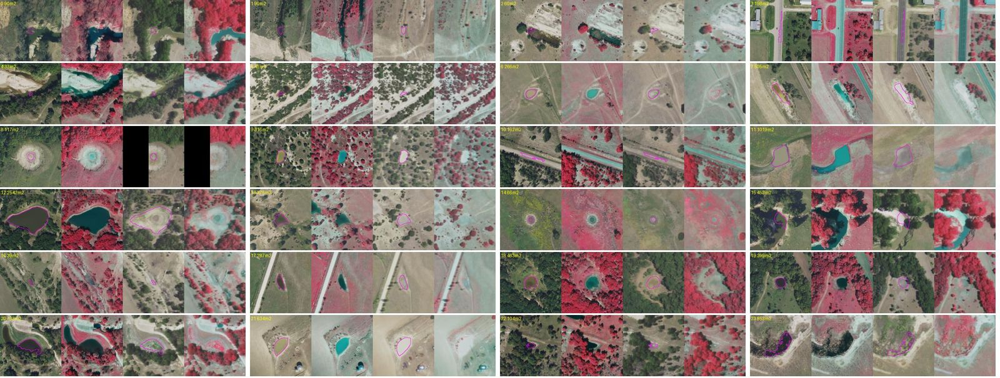
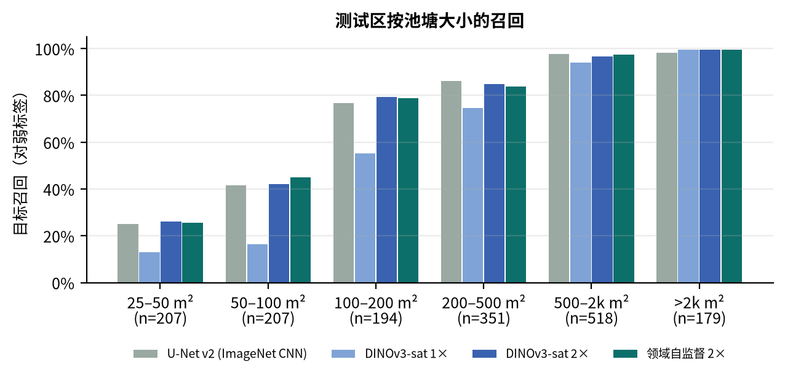
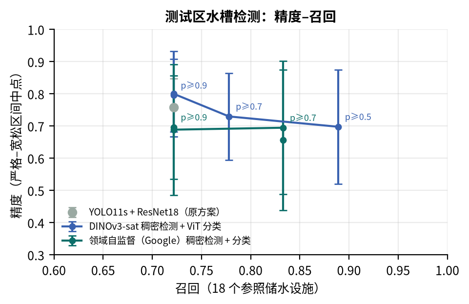
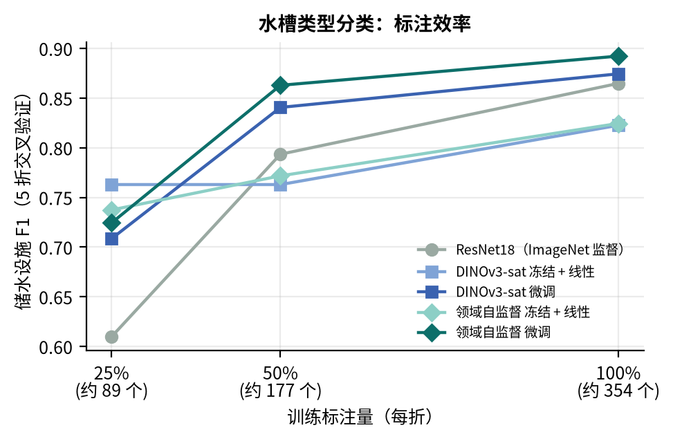
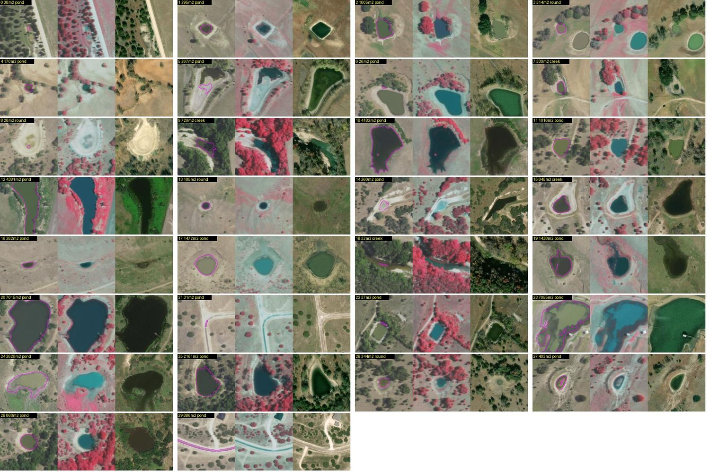
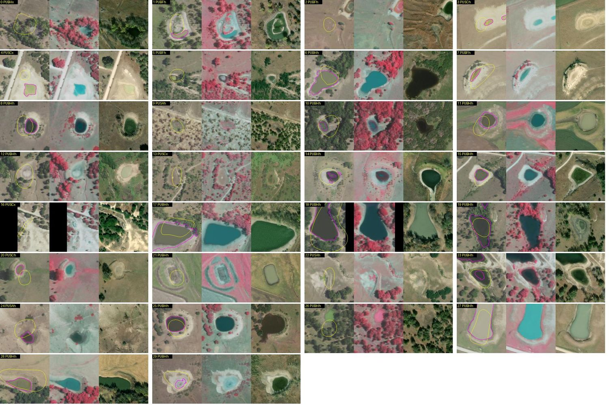
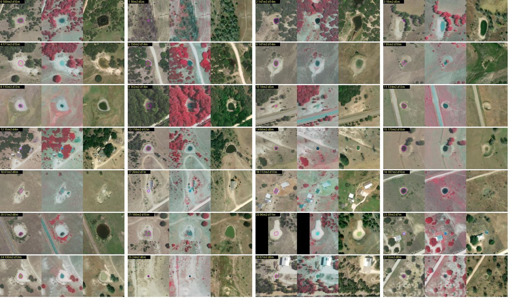
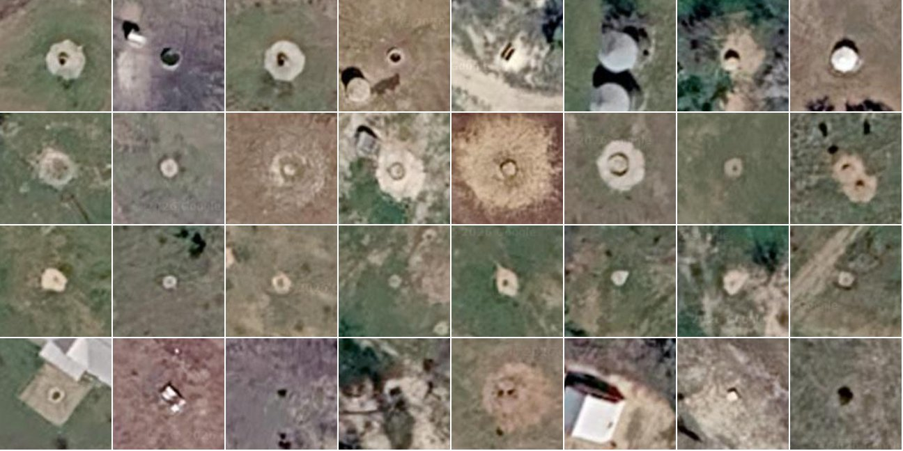
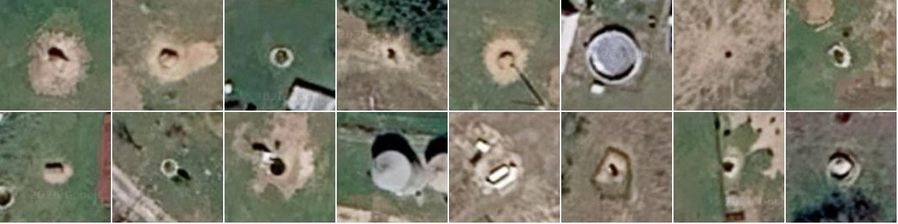
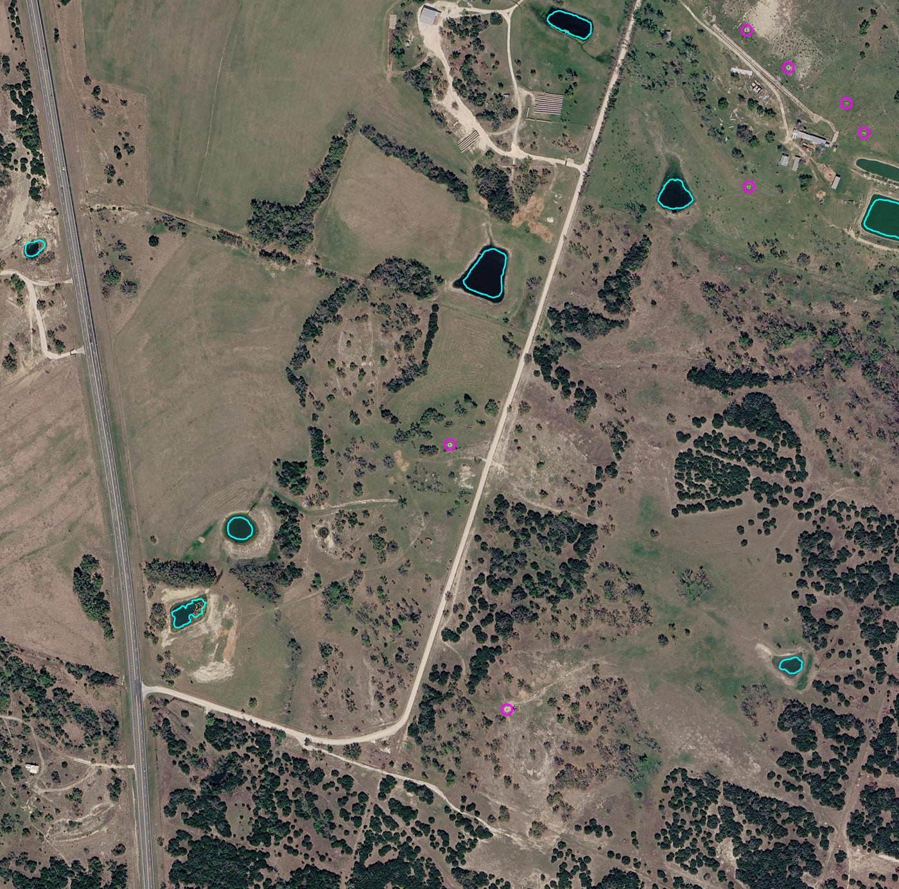

两类牧场饮水点分别用两套模型检测。土坝池塘（stock pond）用公开的 NAIP 四波段影像（含近红外）做分割，并在 2018、2020、2022 三期影像上逐个判断"还有没有水"。直径 2–12 m 的圆形人工水槽和储水罐在 NAIP 上太小，改用 Google 卫星图（约 0.25 m）检测，再用 0.13 m 切片区分真水槽与草捆、喂料架。当前结果来自自监督预训练的 ViT-L 模型（见下文"自监督学习升级"）。
圆点是池塘足迹，颜色表示 2018→2022 的水情变化；菱形是圆形水槽/储水罐。点击任一点查看详情，并可跳转 Google 卫星图核对。底图是 2022 年 NAIP 的 15 m 缩略图，单个池塘和水槽在底图上看不清，以点位为准。
"有水"= 当年检测到的水面 ≥ 该池塘三年最大水面的 10%（且 ≥ 10 m²）。2022 年召回约 81%，所以"2022 年已干"里会混入少量漏检的有水池塘。
2018 年 10–11 月影像拍摄于德州中部罕见的多雨秋季，2022 年 7 月则是严重干旱。全县池塘开放水面从 12.0 km² 降到 4.6 km²。干涸高度依赖池塘大小：小于 500 m² 的池塘在 2022 年只有 18% 还有水，1 公顷以上的仍有 83%。对牧场主来说，这意味着最先需要补水或转场的，就是那些小型土池。
分母为该大小档的全部池塘足迹（<500 m²: 2,615；500–2k: 3,083；2k–10k: 1,805；>10k: 204）。
"新蓄水/重新蓄水"多数是 2018 年漏检或新挖的池塘；"间歇"是三年中有水年份不连续的。

随机抽取 24 个"2020 年有水、2022 年没检出"的目标（每组：2020 RGB | 2020 CIR | 2022 RGB | 2022 CIR）。约 20 个确实是 2020 年有水、2022 年见底的池塘；#3、#10 是公路误检，#5、#16 是很小的阴影斑。
本页的地图和统计已改用自监督模型生成。做法是先不用任何标签学习遥感特征，再用少量标签微调：
| 测试区 | 原模型 | 自监督模型 |
|---|---|---|
| 池塘：像素 IoU | 0.829 | 0.905 |
| 池塘：目标 F1（精度 / 召回） | 0.833（0.915 / 0.764） | 0.845（0.943 / 0.766） |
| 池塘：只用 10% 训练影像时的 F1 | 0.816 | 0.831 |
| 水槽：召回（18 个参照）/ 精度 | 72% / 67–85% | 78% / 60–87% |
| 水槽：测试区估计真实设施数 | 约 490–630 | 约 650–950 |
| 水槽分类：约 90 个标注时储水 F1 | 0.61 | 0.76 |

ViT 在 1× 时漏掉小池塘（一个 patch 就有 92 m²）；放大 2 倍后与 CNN 相当，同时边界更准、误检更少。

同等召回下精度相当或更高、检出更多设施；也可把召回提高到 89%。误差线为严格–宽松精度区间。

水槽类型分类，5 折交叉验证。约 90 个标注时，自监督特征比 ImageNet ResNet18 高 0.13–0.15。
本县领域自监督相对公开 DINOv3-sat 的提升是小幅的：全量数据下池塘 1× +0.023 F1、2× 无提升，水槽分类 +0.018 F1，水槽检测无可测量提升；在只有 10% 训练影像时提升最明显。完整对比见 PDF 报告第 7 节。
没有现成的人工标注，所以用公开数据自动造"弱标签"，再用深度模型去学比规则更稳健的判别。关键点是让模型明确见到公路、屋顶、深色翻耕地这些"像水但不是水"的负样本。
测试区是县中南部 16 幅连续影像（约 650 km²），完全不参与训练。先和弱标签比，再人工逐个看图核验。
| 方法（测试区，NAIP 2022） | 目标精度 | 目标召回 | F1 | 像素 IoU |
|---|---|---|---|---|
| 纯光谱规则基线 | 0.12 | 1.00* | 0.21 | 0.24 |
| U-Net v1（未显式教负样本） | 0.49 | 0.75 | 0.59 | 0.46 |
| U-Net v2（最终模型） | 0.92 | 0.76 | 0.83 | 0.83 |
与弱标签对比，目标 ≥ 25 m²；v1 行按 v1 自身的弱标签计算。*规则基线召回为 1 是因为弱标签本身就由这条规则生成。弱标签不完整，所以下面的人工核验更可信。

60 个随机检出中 53 个真实水体、4 个误检（3 个道路/铁路、1 个深色屋顶）、3 个存疑。每组：NAIP RGB + 检测轮廓 | NAIP CIR | Esri 2021。

60 个随机 NWI 池塘：18 个在 2022 年 7 月已干；42 个有水，检出 34 个。漏检主要是树荫下很小的水面、满池绿藻或水草覆盖的池塘。黄 = NWI，洋红 = 模型。

small_round_water 类（≤ 200 m²，接近圆形）大多是正在干涸的土池中剩下的一小片水，这正是监测中最该预警的状态；少数是人工圆形水槽（如 #25，Esri 上可见圆环），以及住宅旁的游泳池（#12、#23，已加 possible_pool 标记）。
本节记录的是第一版（YOLO11s + ResNet18）方案；地图上的水槽图层已换成自监督模型的结果（3,026 个，见"自监督学习升级"）。
牧场的圆形水槽（镀锌钢槽、水泥槽、塑料桶）和储水罐直径多在 2–12 m。NAIP 0.6 m 下只有几个像素，第一版基于 NAIP 的检测器在全县精度只有 12–33%。换用 Google 卫星图（z19 约 0.25 m）后，水槽清晰可见，可以直接做目标检测。
但高分辨率下出现了新的混淆：冬季喂牛的圆形草捆（约 2 m 的浅色圆盘）和草捆喂料架（金属圆环，周围同样有牛踩出的裸地）与水槽外观非常接近。单靠检测器，高置信度检出里真正的储水设施只有约 29%。所以加了第二阶段：在 z20（约 0.13 m）切片上判断内部是水面/金属罐体，还是草料。

自上而下：储水罐/水槽（内部暗色水面或金属罐体，常有阴影）；草捆喂料架（暗色圆环、浅色草料内部，成片踩踏斑）；圆草捆（均匀浅色圆盘，周围无踩踏）；其他（灌木、牛群、车辆、棚子）。
| 测试区评估（约 650 km²，不参与训练） | 召回 | 精度（严格–宽松） | 测试区检出数 |
|---|---|---|---|
| NAIP 0.6 m 斑点 + CNN（第一版） | — | 12–33% | — |
| Google z19 YOLO，单阶段，置信度 ≥ 0.35 | 60% | 29%* | 1,025 |
| YOLO + z20 类型分类（第一版），置信度 ≥ 0.2、储水概率 ≥ 0.8 | 72% | 67–85% | 741 |
召回参照集：从测试区独立挑出、并在 z20 下确认的 18 个储水设施。精度：从最终检出中随机抽样，在 z20 下逐个核验，"宽松"把看不清的计为正确。*单阶段一栏是在 z20 下复核同一批高分检出得到的：48 个中 14 个是储水设施，22 个是草捆，10 个是喂料架。样本量都不大，数值的不确定性约 ±12 个百分点。

从最终检出的随机样本里人工确认的 16 个：牛道汇聚的圆形水槽、带水的水泥槽、金属和塑料储水罐。

测试区内一块牧场：青色为 2022 年 NAIP 检出的池塘水面，洋红为两阶段模型判定的水槽/储水罐。
路径相对于项目根目录，坐标系 EPSG:26914（GeoJSON 为 WGS84）。
| 文件 | 内容 |
|---|---|
outputs/vector/water_sources_2022_hamilton.geojson | 2022 年县界内全部水体检出（4,974 个），含面积、圆度、类别、误检标记、经纬度 |
outputs/vector/water_sources_{2018,2020,2022}.gpkg | 三期全部检出（覆盖范围略大于县界） |
outputs/pond_inventory_multiyear_ssl_hamilton.csv | 7,707 个池塘足迹的逐年水面面积与有水/干涸状态（自监督集成模型，推荐） |
outputs/vector/round_tanks_hamilton_ssl.geojson | 全县 3,026 个水槽/储水罐（自监督模型，推荐） |
outputs/pond_inventory_multiyear_hamilton.csv | 原模型的池塘清单（7,915 个，供对照） |
outputs/vector/round_tanks_county_v3_typed.gpkg | 全县圆形水槽/储水罐候选，含检测置信度、四类概率；water_source = true 为最终结果 |
runs/yolo/tank_v3/weights/best.pt · runs/tank_type_cls.pt | 水槽检测器（YOLO11s，Google z19）；类型分类器（ResNet18，Google z20） |
data/manual/ | 全部人工标注：水槽框、z20 类型标签、核验记录 |
outputs/prob/{year}/*.tif | 逐像素水体概率图（0–255） |
outputs/eval/ | 弱标签评估与全部人工核验记录 |
runs/unet_rgbn_v2/best.pt · runs/unet_rgb_v2/best.pt | 四波段模型；仅 RGB 模型（未单独评估） |
README.md、scripts/ | 复现流程，01–10 按顺序运行 |